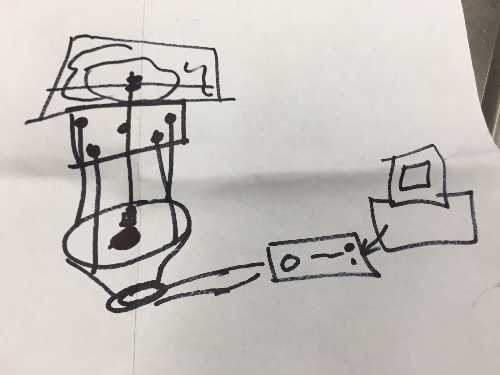

I was asked to collaborate with Moonlighter Makerspace to make a Chladni Plate for the upcoming LATE @frostscience museum event series. Chladni Plates provided an early way to visualize the effects of vibrations on mechanical surfaces based on the German scientist Ernst Chladni, one of the pioneers of experimental acoustics and Cymatics.

The Build Process
I needed to test the speaker as it had been sitting in my shed for over 9 years. After connecting it to an amp and my laptop, I was ready to proceed.
The construction involved:
- Marking and drilling holes for the threaded rods
- Creating a cardboard mockup to test dimensions
- Laser cutting an acrylic panel to block direct sound from the speaker
- Adding a threaded rod to a PVC cap, glued to the center of the speaker cone
- The other end of the rod connects to the center of the top metal plate
The acrylic panel blocks the sound coming directly from the speaker while keeping the mechanism rigid. It allows only the vibrations from the central rod (adhered to the center of the speaker cone) to reach the top plate.

Demos and Recognition
The Chladni Plate was demonstrated at the Frost At Night event and later at Maker Faire Orlando. I also made other Cymatics demonstrations to show at the Frost Museum.
I won my first Maker of Merit Blue Ribbon for my Cymatics build!
I would like to thank Ian Cole for inviting Moonlighter Makerspace and me to Maker Faire Orlando, and Pete Prodoehl for my first Blue Ribbon.
Related
-
Building Poem Robots for O, Miami
Another collaboration between art, sound, and hardware.
-
Poetry Robots: From Poem-o-matic to Alphie 2.0
A decade of robotic poetry installations in Miami.